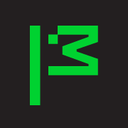

← 返回首页
浏览器扩展
共 38 个站点，按权重排序
Chrome 应用商店
Chrome 扩展与主题官方商店
Edge 加载项
Edge 浏览器扩展商店
Firefox 附加组件
Firefox 扩展官方商店
Greasy Fork
用户脚本仓库
Tampermonkey
用户脚本管理器
uBlock Origin
高效的广告与追踪拦截
沉浸式翻译
网页双语对照翻译
脚本猫
国产用户脚本管理器
Helium
隐私优先的 Chromium 浏览器，默认启用 uBlock Origin 与追踪拦截，基于 ungoogled-chromium，支持 Windows、macOS、Linux。

Firefox Focus
专注隐私的移动浏览器，自动拦截追踪和广告。页面加载更快，数据留给自己。
SponsorBlock
SponsorBlock 更偏生活质量而不是隐私工具，众包赞助口播和片头的时点，让播放器自动跳过，免费开源。诚实的提醒是它依赖志愿者已经标注过某个视频，较新或冷门的片段可能没被覆盖，而且它是 YouTube 的使用便利，不是防追踪。装它是因为看得更舒服，不是因为它保护你；要保护，就配一个真正的拦截器。
Brave
快速的跨平台 Chromium 浏览器，默认拦截广告与追踪器，开箱即用，适合新手或不想花时间配置的人。
uBlock Origin Lite
权限模型是这里的主要故事：基础模式下它拦广告和追踪器，却不要求访问你访问的每个站点，相比经典扩展是实质的安全改进。它是 iOS 上 Safari 推荐的内容拦截器，那里没有别的强选择。诚实的短板是 MV3 对规则数量有硬限制，也封掉了动态过滤，所以达不到完整 uBlock Origin 的深度。用不了原版的 Chrome 和 Safari 用户、或想要更轻浏览器权限的人，选它合适。
Cromite
已停止的 Bromite 的活跃后继，给安卓（现在也有桌面）一个内置广告拦截和 DoH 的 Chromium 构建。诚实的背景是它只是众多分叉之一，你要信一个更小的维护者跟得上 Chromium 持续不断的安全更新，这是真实的负担。专给安卓上加固 Chromium 的好选择；iOS 上、或你偏好 Gecko 引擎，它不适用。
Mullvad Browser
把 Tor 项目的抗指纹措施套到正常浏览体验上，这个组合确实有吸引力。每个 Mullvad Browser 用户共用同一个指纹，这本身就是设计目标，所以即使不在 Tor 上，它对抗追踪也很稳。短板是永久的无痕模式意味着没有持久登录、没有保存的标签页，随意的用户会烦。已经跑着 VPN、想要浏览器层面抗追踪又不想转 Tor 的桌面用户，最合适。
ClearURLs
ClearURLs 把链接里的追踪垃圾剥掉，也就是那些跟着你在站点之间跑的 utm 和点击 ID 长参数，在后台安静完成。它是小而专注的工具，单靠自己不会改变你的隐私面貌，偶尔还会把需要某个参数才能工作的链接裁过头。作为低成本的附加层，和一个真正的内容拦截器一起用；别指望它带来日常能察觉的变化。
Onion Browser
在 iOS 上它实际上是接入 Tor 网络唯一真正可行的路径，这就够它存在了。对简介里暗示的短板要看清楚：苹果强制所有浏览器用 WebKit，所以它没法达到真正 Tor Browser 的匿名保护，某些泄漏不可避免。在 iPhone 上随手访问 onion 服务或轻度匿名，用它；威胁模型严肃，就在桌面用 Tor Browser 做那件事。
xBrowserSync
xBrowserSync 在浏览器和设备之间同步书签与标签页，数据在客户端加密，所以你可以不用谷歌或 Mozilla 账号做同步，还保住便利。它是窄工具不是隐私套件，可用性上你信任的是社区服务器或自建的那个。想要跨浏览器同步又不愿把书签清单交给大厂、也不介意稍麻烦的配置，它值得。
Cookie AutoDelete
Cookie AutoDelete 在你关掉标签页的瞬间清掉该站点的 cookie，正好杀掉让站点跨会话认出你的持久标识。代价是摩擦：除非你仔细把信任的站点加白名单，否则会不断被登出，很多人最后放弃、白名单加得过宽。它奖励有纪律的人，烦到其他所有人；容器标签页已经覆盖了你的话，可能根本不需要它。
Firefox
可靠、快速且注重隐私的浏览器。可以配合扩展加固，开启 DNS over HTTPS，并在各设备间同步。
AdGuard
Safari 内容拦截器里能力少见地强，远不止隐藏广告，还做广泛的追踪与外观过滤，而且开源。要知道 Safari 在这里怎么运作：苹果的内容拦截模型限制了任何扩展能深到哪，所以即使这么强的拦截器也做不到系统级工具的全部。Mac 和 iOS 上想在浏览器内强力拦截的 Safari 用户，它是个扎实选择；要覆盖每一个应用，就再配网络层过滤。
Decentraleyes
Decentraleyes 在本机提供常用代码库，让你的浏览器不再每个页面都去敲谷歌等公司的 CDN，切掉一条安静的追踪通道。诚实的局限是内置的库会陈旧，现代站点越来越多用它不覆盖的库，这些年保护面已经收窄。和 uBlock Origin 搭配无害，但单靠自己现在只是小补充，而不是能实质改变暴露面的工具。
IronFox
用过 Mull、想继续留在加固的安卓 Firefox 上，IronFox 是自然的延续。加固补丁和隐私向的默认设置，让它在普通安卓 Firefox 面前有真实优势，开放许可意味着社区可以独立审计和维护。主要短板是开发者基数小：这种规模的项目靠持续的志愿投入，完全托付之前先看发布节奏。高阶用户和 GrapheneOS、CalyxOS 的使用者是显而易见的受众；随意的用户可能觉得配置面超出所需。
LibreWolf
隐私和抗指纹的活已经替你做好的 Firefox，省掉那张手动加固清单。取舍在便利这边：它去掉遥测和 Pocket 类附加功能，会弄坏一些依赖 Firefox 默认行为的站点，更新也比上游稍慢。想要加固过的 Firefox 又不想折腾，它很理想；需要一切都顺畅能用，普通 Firefox 加几个扩展更温和。
Orion
扩展兼容这块确实少见：在 WebKit 外壳里同时跑 uBlock Origin 和 Safari 扩展，别的浏览器给不了。隐私默认很强，零遥测的说法与商业模式相符，靠用户资助、没有广告交易。诚实的短板是 Orion 闭源，所以零遥测的断言无法在代码层面独立验证。想要 Chromium 之外的扩展触达、也愿意信任一家小商业公司的 macOS 与 iOS 用户，它合适。
Privacy Badger
拦截隐形追踪器，阻止广告商和其他第三方偷偷记录你去过哪里、看了什么页面。比 uBlock 更简单、可配置项更少，只针对追踪器，不拦广告。
Firefox Multi-Account Containers
把在线生活的不同部分分进按颜色区分的标签页，从而保护隐私。cookie 按容器隔离，可以同时用多个身份或账号上网。
WebRTC-Leak-Prevent
让 Chromium 用户能自己控制 WebRTC 隐私设置，防止 WebRTC 泄漏。Firefox 用户可直接在浏览器设置里关掉。可以用 browserleaks 的 WebRTC 页面自测是否泄漏。
Canvas Fingerprint Blocker
在不剥夺网页使用 HTML5 Canvas 的前提下阻断指纹。Canvas 指纹常被用来追踪，这个扩展通过不让浏览器生成真正唯一的键来减轻这种追踪。
Privacy-Oriented Origin Policy
在 Origin 头最不必要的时候阻止 Firefox 发送它，以保护隐私。
LocalCDN
模拟远程框架（如 jQuery、Bootstrap、Angular），改由本地资源提供，避免向追踪型 CDN 发出不必要的第三方请求。
PrivacySpy
PrivacySpy.org 的配套扩展。那个开放项目给隐私政策打分、加注并归档，扩展会显示当前网站隐私政策的分数。
Flagfox
显示一面国旗，标出当前网站服务器的所在国家，一眼就能看到。点图标还有更多工具：站点安全检查、whois、校验等。
AmIUnique Timeline
帮你更好地理解浏览器指纹的演变，也就是网站用来唯一识别和追踪你的那套东西。
Netcraft Extension
访问已知或可疑的钓鱼网站时提醒你，并检测可疑的 JavaScript，包括盗刷脚本和挖矿脚本。还会给站点的正当性与安全性一个简明评分，对不太懂技术的人很友好。Netcraft 另有在线工具 Site Report，可以查任意网站跑的是什么。
DeArrow
众包的浏览器扩展，用社区提交的版本替换 YouTube 视频标题和缩略图，压掉标题党。
Floccus
简单高效的书签同步，可以用 Nextcloud 书签、WebDAV 服务器（本地或远程），或者仅通过 LoFloccus 用本地文件夹。扩展支持 Chrome、Firefox 和 Edge。
Unmark
一个网页应用，把书签当待办来管。可以自建，也可以用它的托管服务，有免费和付费档。
其他分类
推荐
马列经典
图书馆与文献
安全与开源
AI 工具
学术科研
编程开发
资源搜索
网盘资源
在线工具
学习资料
素材设计
软件应用
系统与镜像
影视
动漫漫画
古籍文史
音乐音频
游戏
社区资讯
其他